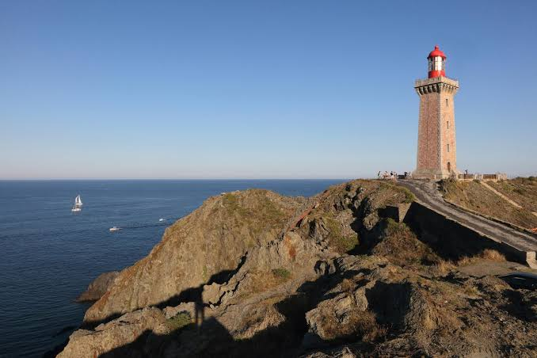

Cap
Béar


⟹ Cap & Patrimoine Maritime ⟸
Le Cap Béar, avancée rocheuse qui ferme au sud-est la rade de Port-Vendres, occupe depuis des siècles une position essentielle sur les routes maritimes du Roussillon. Bien avant les phares modernes, l'approche de ce littoral abrupt imposait déjà des dispositifs de veille et de signalisation. La tradition documentaire de Port-Vendres rappelle qu'au Moyen Âge des feux étaient entretenus pour aider les navigateurs à reconnaître l'entrée du port : la vocation de « sentinelle » du cap est donc bien antérieure aux grands aménagements du XIXe siècle.

Après le traité des Pyrénées de 1659, qui rattache le Roussillon à la France et déplace la frontière vers le sud, Port-Vendres acquiert une importance militaire nouvelle. À la fin du XVIIe siècle, Vauban étudie la défense de la rade et fait établir un ensemble de redoutes et de batteries destiné à contrôler ses accès. La redoute Béar participe à ce système défensif. Aux XVIIIe et XIXe siècles, l'essor du port, puis le développement des liaisons avec l'Afrique du Nord, renforcent encore la nécessité de sécuriser cette côte exposée à la tramontane, aux coups de mer et aux brouillards.
La grande révolution vient avec la politique nationale d'équipement des côtes en phares. Le premier phare de Béar est allumé le 1er mai 1836. Il s'agit d'une tour cylindrique d'environ neuf mètres, implantée en retrait sur les hauteurs. Sa situation se révèle toutefois imparfaite : l'édifice se trouve trop fréquemment noyé dans les nuages et les brumes. Malgré cette faiblesse, il éclaire le littoral pendant près de soixante-dix ans, à une époque où Port-Vendres connaît une forte croissance du trafic maritime.
Le XIXe siècle transforme parallèlement le cap en véritable observatoire stratégique. Le sémaphore de Béar, établi dans les années 1860, permet la surveillance et les communications maritimes. Des ouvrages militaires complètent progressivement le dispositif. Le cap réunit alors trois fonctions étroitement liées : défendre la rade, observer la mer et guider la navigation.
Pour remédier aux défauts de l'ancien feu, l'administration des Phares et Balises construit un nouvel édifice beaucoup plus près de la pointe. Le phare actuel est allumé le 15 octobre 1905. Sa tour carrée en pierre de taille mesure environ 26 à 27 mètres ; le foyer lumineux se trouve à près de 80 mètres au-dessus de la mer. L'architecture intérieure, particulièrement soignée, associe notamment granit, marbre rose et opaline. Cette qualité architecturale et technique explique la protection du phare au titre des monuments historiques.
Au XXe siècle, le Cap Béar traverse deux guerres mondiales, les transformations du port et la modernisation complète de la signalisation maritime. Les systèmes optiques, l'alimentation et les télécommunications sont progressivement modernisés ; l'automatisation finit par faire disparaître la présence permanente des gardiens. Le phare n'en demeure pas moins un établissement actif de signalisation maritime et l'un des repères les plus puissants de la Côte Vermeille.
Aujourd'hui, l'ensemble formé par le phare, le sémaphore, les vestiges militaires, les falaises de schiste et les anciens chemins de surveillance raconte plusieurs siècles d'histoire maritime. Le Cap Béar n'est donc pas seulement un panorama : il constitue un résumé du destin de Port-Vendres, successivement port frontalier, place militaire, port de commerce et de voyageurs, puis territoire patrimonial où se rencontrent histoire navale, architecture et paysage.
« 1er phare : 1er mai 1836… 2e phare : 15 octobre 1905. »
Inventaire général du patrimoine culturel — Ministère de la CultureSources documentaires : Ministère de la Culture — Inventaire du phare ; Ministère de la Culture — protection Monument historique ; Ville de Port-Vendres — patrimoine.
Exposé de plein fouet à la tramontane, qui y a établi en 2009 un record de vitesse de vent de 191 km/h, le Cap Béar présente une végétation basse et résistante, typique du maquis méditerranéen : cistes, romarin, bruyères et genévriers rampent au ras du sol pour échapper aux rafales.
Les falaises du cap accueillent des oiseaux marins et offrent un point d'observation privilégié sur la mer, dans le prolongement immédiat de la réserve naturelle marine de Cerbère-Banyuls, dont le projet d'extension prévoit d'ailleurs de relier son périmètre jusqu'au Cap Béar.
Sous l'eau, les fonds rocheux du cap, réputés pour la plongée, abritent une biodiversité méditerranéenne riche, en lien direct avec les habitats protégés de la réserve marine voisine.
Fréquentation du sentier littoral : le passage régulier de nombreux randonneurs use les sols et fragilise la végétation du maquis.
Stationnement limité : une dizaine de places seulement près du phare, ce qui génère une forte pression aux abords du site en haute saison.
Risque incendie : la végétation basse et sèche du maquis, combinée à la tramontane, expose le cap à un risque élevé de feu de végétation.
Érosion du littoral : les tempêtes et la houle méditerranéenne fragilisent régulièrement les sentiers côtiers autour du cap.
Le sentier littoral depuis le port de Port-Vendres jusqu'au phare, praticable à pied, offre le meilleur point de vue sur l'ensemble de la Côte Vermeille.
La plage Bernardi en contrebas du phare, accessible à pied, pour une baignade dans un cadre spectaculaire.
Mieux vaut arriver tôt le matin ou se garer à l'Anse de Paulilles et poursuivre à pied, le parking du phare étant très limité.
Le crépuscule est le moment privilégié pour observer le phare, entre lumière rasante sur les falaises et coucher de soleil sur la Méditerranée.